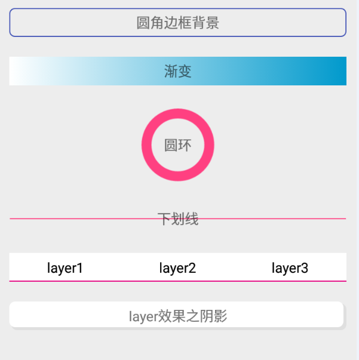

虽然资源文件的引用很简单，但好记性不如烂笔头，整理一些开发中常用的背景效果有助于快速开发，
效果图如下：

shape
在Android开发中，使用shape可以快速画出一些我们想要的背景，减少贴图的直接使用，更好的适配不同分辨率的手机。
官网说明
1 | <?xml version="1.0" encoding="utf-8"?> |
shape可以画四种图形，分别是：矩形（rectangle），椭圆（oval），线（line），圆环（ring）。
接下来来实现各种背景效果，方便以后开发，先上效果图：
圆角
1 | <?xml version="1.0" encoding="UTF-8" ?> |
渐变
1 | <?xml version="1.0" encoding="utf-8"?> |
环形
1 | <?xml version="1.0" encoding="utf-8"?> |
android:thickness：圆环宽度
线
1 | <?xml version="1.0" encoding="utf-8"?> |
线是居中显示的，这点很无奈，你不能用此种方式将线作为背景来实现类似下划线的效果。
android:width：填充颜色的高度
android:dashGap：虚线间距宽度
android:dashWidth：虚线宽度
android:height：line的高度，size大小必须大于android:width
layer-list
layer-list简单的理解就是将shape，selector组合起来，可以实现一些更复杂的效果，下面来看一些效果：
tap选项卡切换效果
1 | <?xml version="1.0" encoding="utf-8"?> |
这里item里面相当于实现了前面shape的line没办法实现的下划线效果
为了让java代码更加简洁，这里控件我们可以选择RadioGroup，如下：1
2
3
4
5
6
7
8
9
10
11
12
13
14
15
16
17
18
19
20
21
22
23
24
25
26
27
28
29
30
31
32
33
34
35
36
37
38
39
40<RadioGroup
android:layout_width="match_parent"
android:layout_height="wrap_content"
android:orientation="horizontal"
android:layout_marginTop="10dp">
<RadioButton
android:id="@+id/layer1"
android:layout_width="0dp"
android:layout_height="wrap_content"
android:layout_weight="1"
android:background="@drawable/demo_bg_layer2"
android:button="@null"
android:gravity="center"
android:padding="5dp"
android:text="layer1"/>
<RadioButton
android:id="@+id/layer2"
android:layout_width="0dp"
android:layout_height="wrap_content"
android:layout_weight="1"
android:background="@drawable/demo_bg_layer2"
android:button="@null"
android:gravity="center"
android:padding="5dp"
android:text="layer2"/>
<RadioButton
android:id="@+id/layer3"
android:layout_width="0dp"
android:layout_height="wrap_content"
android:layout_weight="1"
android:background="@drawable/demo_bg_layer2"
android:button="@null"
android:gravity="center"
android:padding="5dp"
android:text="layer3"/>
</RadioGroup>
这样，我们只需要在java代码里面监听RadioGroup即可。
阴影效果
1 | <?xml version="1.0" encoding="utf-8"?> |